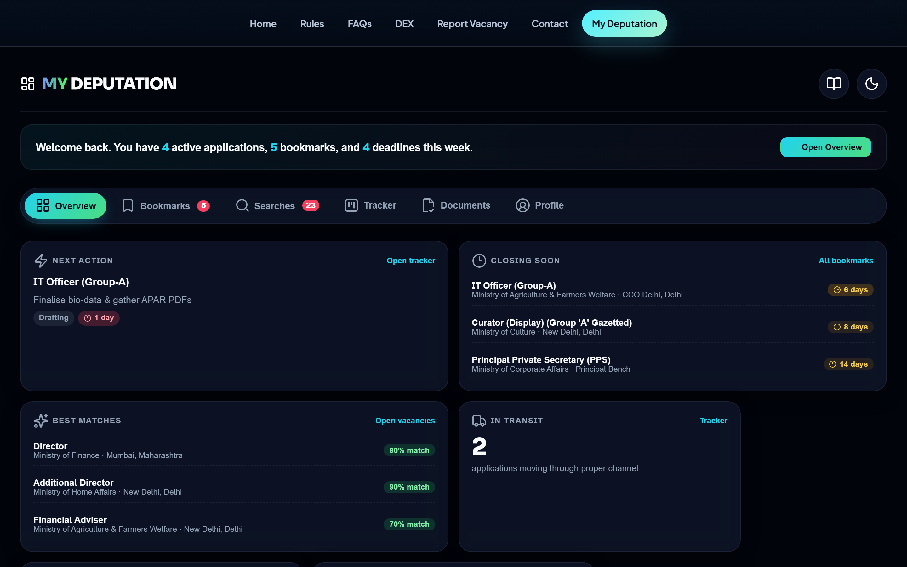
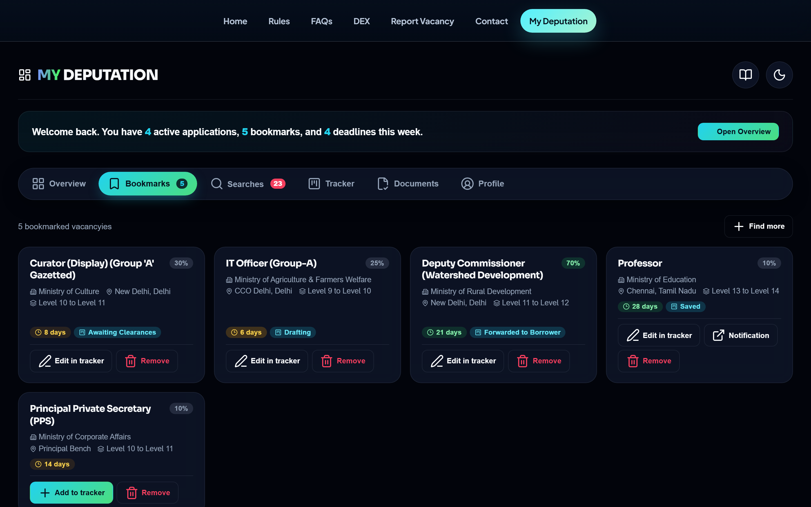
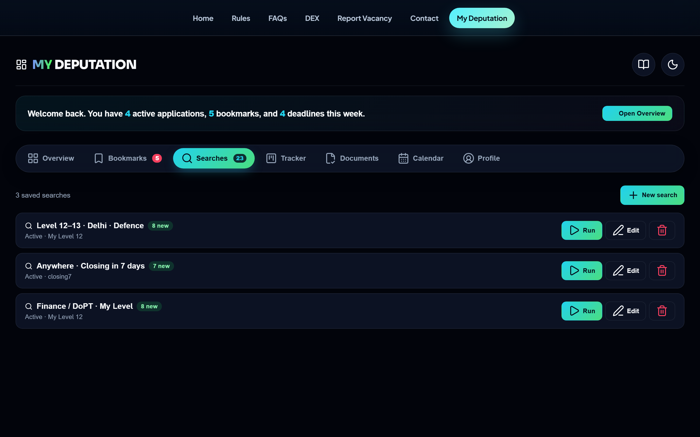
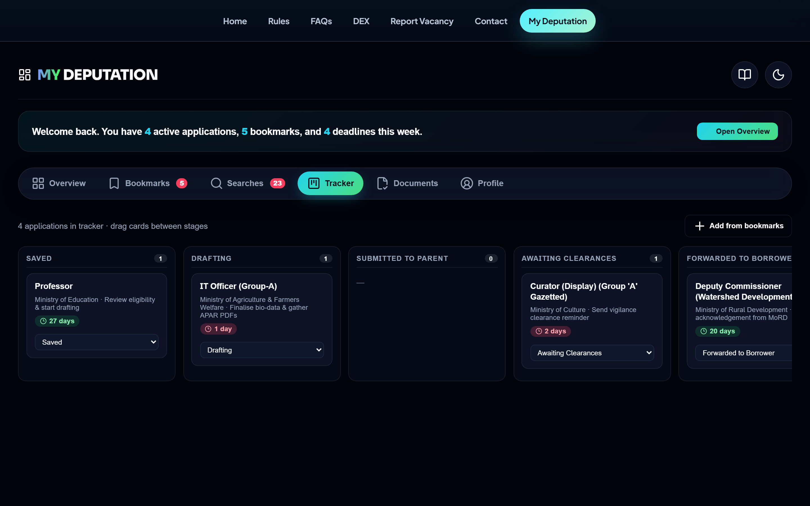
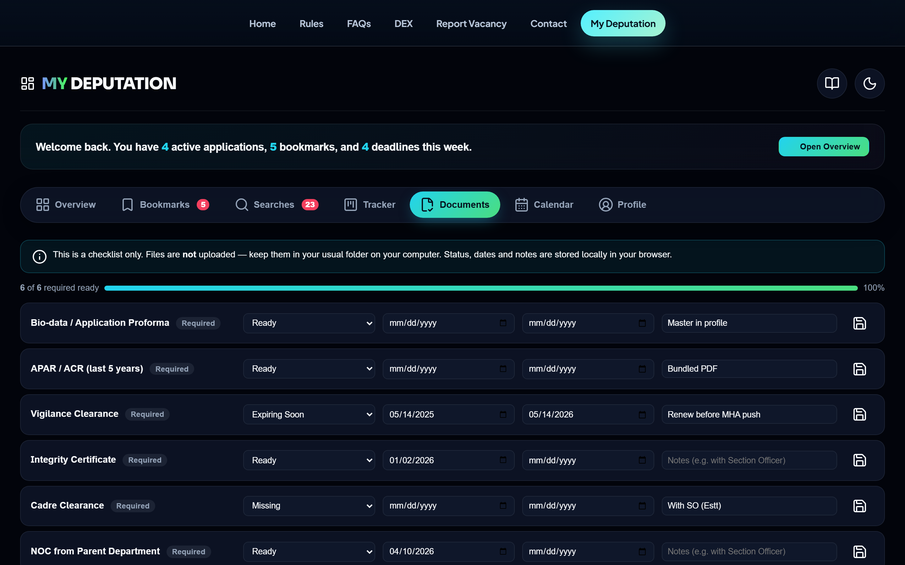
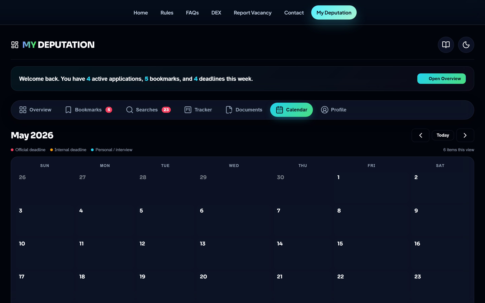
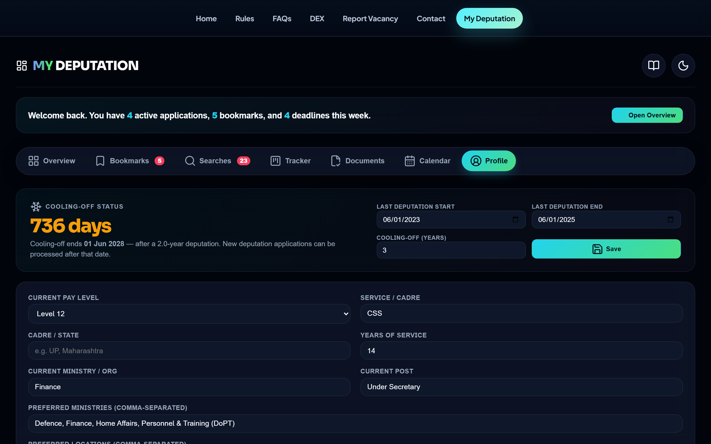

MY DEPUTATION
Your private deputation cockpit — bookmarks, saved searches, application tracker, document checklist, calendar, and deadline reminders. Everything stays in your browser.
Contents
My Deputation turns the simple "save a vacancy" gesture into a complete deputation workflow: discovery → eligibility → documents → deadlines → application progress. Everything is stored in your browser, so nothing is shared with any server.
1First-time setup (2 minutes)
- Open the page. You'll see a welcome screen with three steps.
- Click the Profile tab (or the "Set your pay level" step).
- Fill in at minimum:
- Current pay level (e.g. Level 12)
- Preferred ministries (comma-separated, e.g.
Defence, Finance, Home Affairs) - Preferred locations (e.g.
Delhi / NCR, Bengaluru)
- Click Save profile.
2The seven tabs
The whole product is one page with seven tabs. Hash-routed: my-deputation.html#tracker jumps straight to a tab and bookmarks correctly.
Overview — the bento dashboard
Shows a welcome strip with live counts and a grid of cards covering the most useful aggregates.

Overview dashboard with welcome strip and bento cards
Bookmarks — every vacancy you've hearted
Each card shows a match % (if you set pay level in Profile), the current tracker stage if added, deadline pill, and an optional cooling-off banner. Add to tracker, open notification, or remove.

Bookmarks grid — match %, tracker stage, deadlines, cooling-off pill
Searches — saved filter combinations with new-match alerts
Click New search to save a filter combo. The "N new" badge counts vacancies that weren't there last time you ran it. Run opens the main vacancies page with the filters pre-applied via URL params.

Saved searches with new-match badges and run / edit / delete
Tracker — kanban for proper-channel applications
Ten stages reflecting how deputation files actually move. Drag cards between columns on desktop; on mobile use the dropdown at the bottom of each card. Click a card to edit deadlines, next action, contact, notes, and view stage history.

Tracker kanban — drag cards across proper-channel stages
Documents — readiness checklist (no file uploads)
Status & dates only — files stay in your own folder. Six documents are marked Required and count toward the readiness %.

Document checklist with status pills, dates, and notes
Calendar — month grid of every deadline
Sun–Sat month grid showing official deadlines, internal deadlines, and personal reminders. Today is highlighted in cyan. Click any day for the full list of items, with shortcuts to open the related tracker entry or add a new reminder for that date.

Calendar — red = official, amber = internal, cyan = personal / interview
- Prev / Next / Today — top-right buttons navigate months.
- Dot colour — red = official deadline, amber = internal, cyan = personal reminder or interview.
- +N more — appears when a day has more than two items; click the cell to see the full list.
- Click a day — opens a modal with every item, plus a one-click "Add reminder for this day".
Profile — your service identity (+ cooling-off widget)
Powers match score, tracker prefills, and the new cooling-off calculator at the top of the tab. Includes Export, Import, and Reset.

Profile tab — cooling-off widget at top, service identity form below
The cooling-off widget at the top is a quick standalone calculator:
- Enter last deputation start and end dates. The cooling-off years are auto-applied from the DoPT rule below based on your pay level.
- The widget computes the exact eligible-from date and shows a live countdown ("736 days"), "Eligible now", or "Nil cooling-off required" for Secretary-level officers.
- Override the auto value any time by editing the years field; a chip indicates whether you're on the DoPT rule or overriding it.
- Click Save — the bookmark cards' cooling-off pill stays in sync with the same data.
DoPT cooling-off rule (per the consolidated guidelines on deputation):
| Rank | Pay Level | Cooling-off period |
|---|---|---|
| Joint Secretary level & below | Level 14 and below | 3 years |
| Additional Secretary | Level 15 | 1 year |
| Secretary & above | Level 16+ | Nil |
3How match score works
A vacancy's match % (0–100) is the sum of these factors:
| Factor | Max | Awarded when |
|---|---|---|
| Pay level eligibility | 40 | Your pay level falls inside the vacancy's eligibility range |
| Ministry preference | 20 | Vacancy ministry is in your preferred list |
| Location preference | 20 | Vacancy location matches your preferred list (Delhi/NCR matched intelligently) |
| Deadline safety | 10 | ≥ 7 days left to apply |
| Experience overlap | 10 | Your experience tags appear in the vacancy's qualifications |
4How reminders work
Reminders are auto-generated whenever you set an Official or Internal deadline on a tracker entry. They sort by urgency on the Overview dashboard and appear as coloured dots on the Calendar.
- Done marks one off; Undo brings it back.
- Use + Add reminder on Overview (or click any Calendar day) to add a personal one (e.g. "Follow up with vigilance section").
- Auto-reminders disappear when their tracker entry is closed (Joined / Rejected / Withdrawn).
5Privacy & data
- Everything stays in your browser (
localStorage). No accounts, no servers, no telemetry. - Clearing browser data deletes everything. Export periodically from Profile.
- Same browser, same profile is required — data won't follow you to another device unless you export → import.
- Bookmarks (heart icon) are shared with the main vacancies page. Removing on either page removes on both.
6Tips & tricks
- Theme toggle — moon/sun icon top-right. Persists across visits.
- Manual — book icon next to theme toggle opens this popup any time.
- Deep-link tabs —
my-deputation.html#calendarjumps straight to a tab. Bookmark your favourite. - Mobile — tabs scroll horizontally; kanban becomes vertical, one column per swipe; calendar cells shrink but stay clickable.
- Quick triage — Overview → tap "Closing soon" item → Add to tracker → set internal deadline a few days before official → auto-reminder fires, and the date lights up on the Calendar.
- Empty-criteria searches — leave fields blank except a quick filter (e.g. "Closing in 7 days") to monitor any time-sensitive view.
7Troubleshooting
| Problem | Fix |
|---|---|
| Match % shows 0 everywhere | Set your pay level in Profile and save |
| Bookmark on vacancies page didn't appear here | Refresh the My Deputation page |
| Lost everything | Did you clear browser data? Profile → Import if you have a recent export |
| Kanban won't drag on phone | Use the stage dropdown at the bottom of each card |
| Saved search "N new" badge stuck | Click Run once — it resets the baseline |
| Calendar looks empty | Add tracker deadlines or personal reminders; closed tracker entries don't generate events |
| Cooling-off shows "Eligible now" wrongly | The widget needs both a last-deputation end date and a cooling-off years number to compute a countdown |
| Different device shows different data | Export on the old device → Import on the new one |
8Roadmap (not yet built)
Planned but not in v1.1: explainable match-score breakdown, vacancy comparison view, PWA install / offline mode, proforma generator, document file storage, optional cloud sync. Feedback → Contact tab.